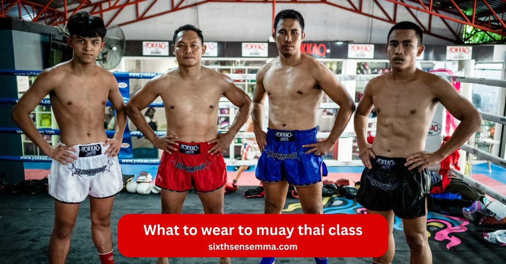
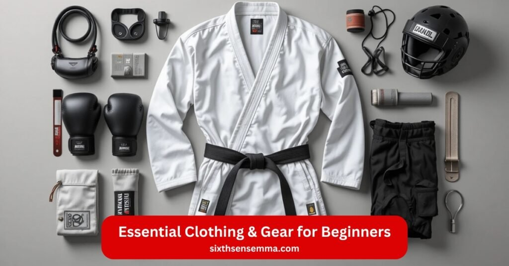
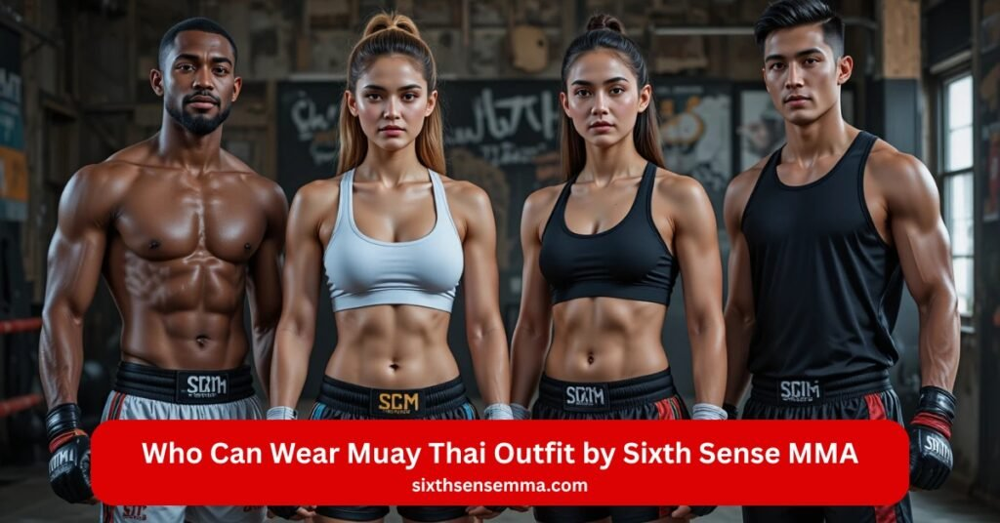

What to Wear to Muay Thai Class Outfit Ideas by Sixth Sense MMA

What to wear to muay thai class. Muay thai stands as the national sport of thailand. This unarmed martial art traces roots to combat on the battlefields. Thai fighters honed it in the humid climate and heat in thailand. Muay thai fighters now practice outside of thailand. You step onto gym mats for your first muay thai class. What to wear to muay thai class keeps it simple. Muay thai shorts cut high with wide leg openings.
Tank top or t-shirt stays breathable in polyester. Fighters wear quick-dry polyester to fit the muay thai dress code. Gym rules demand proper muay thai attire. Freedom of movement rules every clinch and spar. Beginner starts light. Hand wraps guard the knuckle. Muay thai gloves pad strikes. Thai gloves suit the style. Compression shorts layer under boxing shorts. Risk of injury drops fast. Muay thai training flows in nylon or polyester fabric. What to wear to muay thai class builds your muay thai journey.
Essential Clothing for Muay Thai Class by Sixth Sense MMA
Muay Thai stands as the national sport of thailand. This unarmed martial art traces its roots to combat on the battlefields. Thai fighters honed skills in the humid climate and heat in thailand. Today muay thai fighters practice outside of thailand in places like Sixth Sense MMA. You step onto the gym mats for your first muay thai class. The question hits: what to wear to muay thai class. The right attire supports freedom of movement and cuts risk of injury. It fits the muay thai dress code and gym rules. Fighters wear gear that stays breathable in sweaty sessions of clinch and spar.
Muay Thai Shorts
Muay thai shorts form the core of what you wear to muay thai. These boxing shorts cut high on the sides with wide leg openings. The design draws from thailand traditions. Thai boxing pros pick quick-dry polyester or polyester fabric. It wicks sweat fast. Nylon works too for light feel. Skip long pants or legging styles. They limit kicks. Muay thai shorts let you throw high kicks without snag. Grab a pair in polyester for your muay thai training at the muay thai gym.
T-Shirts or Tank Tops
A simple tank top or t-shirt covers the top. Go for breathable fabrics like polyester. Tank top fits loose or fitted based on comfort. Men often choose basic tees. Women pick tank top for ease. The muay thai gym gets hot during technical sparring. Breathable material keeps you cool. Avoid cotton that soaks sweat. Polyester dries quick. This wear for muay thai training supports rolls on the mat without heavy drag.
Rash Guards
Rash guards offer better protection for skin on the gym mats. These compression tops hug tight. They guard against burns from friction. Compression aids blood flow in long muay thai class rounds. Pick short or long sleeve. Rash guards suit martial arts like brazilian jiu jitsu or ground work in mma. For pure stand-up muay thai they stay optional yet smart. The tight fit stops pulls during clinch.
Sports Bra or Compression Tops
Women need solid support. A sports bra handles jumps and strikes. Pair it under tank top or solo. Compression tops add extra hold. Female muay thai athletes face hard impacts. Sports bra cuts bounce. Female fighters compete in muay thai with this base layer. It stays hidden under other attire. Focus on fit that locks in place.
Optional Bottom Layers
Add compression shorts under muay thai shorts. They prevent chafing in the humid climate of training. Undergarments stay minimal. Compression shorts give light support without bulk. Skip loose boxing shorts alone if you want cover. This layer fits proper muay thai sessions with heavy kicks.
What Not to Wear
Steer clear of items that hinder. No street clothes or jeans. They restrict on the mat. Avoid judo gis or thick martial arts like karate uniforms. Unlike boxing shorts in western boxing stay lower cut. Muay thai needs high slits. Skip jewelry to protect your knuckle. No shoes on gym mats. Train barefoot or with ankle guards if needed. Shin guards come for spar but not daily wear to muay thai. Follow gym rules on muay thai gear.

Essential Clothing & Gear for Beginners
You walk into Sixth Sense MMA for your first muay thai class. The gym hums with energy. Thai fighters once used muay thai in combat on the battlefields. Now muay thai fighters train outside of thailand on gym mats. The national sport of thailand blends strikes and clinch. Beginner or pro you need the right muay thai gear you need. The muay thai dress code keeps sessions safe. Fighters wear items that boost freedom of movement. Cut risk of injury with proper muay thai picks. Muay thai training in the humid climate of the muay thai gym demands breathable fabrics. What to wear to muay thai class starts simple. Build your muay thai journey with essential pieces.
Top
Cover your upper body with a tank top or t-shirt. Polyester stays breathable and quick-dry polyester fights sweat. Tank top works for men and women. Female muay thai athletes layer a sports bra under. Compression tops or rash guards add better protection on the mat. Skin stays safe during rolls. Female fighters pick sports bra for support in jumps. Compression cuts chafe in technical sparring. Polyester fabric dries fast in the heat in thailand style sessions. Skip heavy cotton. Light tank top lets you spar free.
Bottoms
Muay thai shorts rule the lower half. These boxing shorts feature wide leg openings. Nylon or polyester builds them light. High side slits give kick range. Thai boxing pros wear them short. Muay thai shorts differ from western boxing cuts. Add compression shorts as undergarments. They stop thigh rub in clinch. No legging or long pants. They snag on the mat. Muay thai shorts fit the muay thai dress code. Fighters wear them to compete in muay thai. Grab a pair for your muay thai class.
Footwear
Step barefoot onto the gym mats. Muay thai stays shoe-free. Toes grip for balance in kicks. Ankle guards pad if you spar hard. Shin guards protect legs but not daily wear to muay thai. Skip socks or shoes. Gym rules keep floors clean. Bare feet build feel for the martial art. Martial arts like brazilian jiu jitsu or judo may differ. Muay thai demands direct contact.
Hand Wraps
Wrap hands before every muay thai training. Hand wraps guard your knuckle. They add wrist support. Strikes hit pads or bags. Hand wraps cut risk of injury. Roll them snug under muay thai gloves. Thai gloves need this base. Box if you mix mma. Hand wraps stay cheap and vital. Muay thai boxing gloves press hard without them.
Boxing Gloves
Grab muay thai gloves for punches and blocks. Thai gloves pad thick for elbows. Unlike boxing boxing gloves they suit eight limbs. Muay thai boxing gloves come in ounces. Beginner starts at 12 or 14. Pair of gloves fits the muay thai gym. Spar needs headgear later. Muay thai gloves differ from kickboxing pairs. Gear you need grows with skill.
Water Bottle & Towel
Stay hydrated in the humid climate. A full water bottle keeps you sharp. Muay thai class runs 60 minutes. Sweat flows on gym mats. Wipe with a small towel. Quick-dry polyester in your attire helps. Towel dries face between rounds. Muay thai training tests limits. Water and towel make the muay thai journey smooth.
Benefits of Wearing the Right Muay Thai Outfit by Sixth Sense MMA
You step into Sixth Sense MMA for muay thai training. The gym mats wait under bright lights. Thai fighters built muay thai as the national sport of thailand. Roots run to combat on the battlefields. Muay thai fighters now train outside of thailand. Beginner or pro the right muay thai attire changes everything. What to wear to muay thai class fits proper muay thai rules. Fighters wear gear that supports the martial art. Muay thai dress code at the muay thai gym sets a standard. Pick breathable polyester and quick-dry polyester. The payoff shows in every muay thai class.
Enhanced Comfort and Movement
Muay thai shorts give freedom of movement. Wide leg openings let hips turn for high kicks. Nylon or polyester fabric stays light in the humid climate. Tank top or t-shirt keeps air flow. Compression shorts stop chafe under boxing shorts. Rash guards hug without pull in clinch. Unlike boxing long pants you stay loose. Thai boxing demands range. Wear for muay thai training cuts drag on the mat. Comfort turns hours into flow.
Improved Performance and Focus
Breathable tank top fights the heat in thailand style sweat. Polyester wicks fast. Sports bra locks support for female muay thai strikes. Compression tops steady core in technical sparring. Hand wraps add wrist support for clean punches. Muay thai gloves pad true. Thai gloves fit the eight limbs. Muay thai boxing gloves keep fists sharp. Pair of gloves builds speed. Focus stays on drills not loose undergarments. Gear you need sharpens every spar.
Reduced Risk of Injury During Training
Shin guards and ankle guards cushion kicks in spar. Hand wraps shield each knuckle. Muay thai boxing gloves spread impact. Compression layers cut skin burns on gym mats. Muay thai shorts stop snags mid-kick. Legging styles trap legs and raise risk of injury. Judo gis bulk up wrong. Martial arts like brazilian jiu jitsu need grips. Muay thai stays open. Better protection comes from smart wear to muay thai. Gym rules back safe attire.
Boosted Confidence in Every Class
Walk in with muay thai shorts and tank top. You match thai fighters. Female fighters own the sports bra and rash guards look. Muay thai journey starts strong. Fighters wear the same cut. Compete in muay thai feels real. Box if you cross to mma. Confidence grows with each round. Essential pieces signal ready. Muay thai class turns nerves to power.
Better Hygiene and Clean Training Experience
Quick-dry polyester fights bacteria in sweat. Polyester fabric dries between rounds. Rash guards block direct skin on gym mats. Compression shorts stay fresh under muay thai shorts. Cotton holds odor. Breathable picks air out fast. Muay thai gym stays clean with gym rules. Towel and water bottle wipe sweat. Muay thai training ends fresh not sticky.
Professional Look That Matches Gym Standards
Muay thai gloves and hand wraps show respect. Thai gloves mark the martial art. Muay thai shorts with high slits fit thailand roots. Tank top or t-shirt keeps it pro. Female muay thai layers sports bra neat. Western boxing shorts fall short. Kickboxing gear mixes close. Sixth Sense MMA sets the bar. Wear to muay thai matches the pros. Unarmed strikes land with pride.

Who Can Wear Muay Thai Outfit by Sixth Sense MMA
The muay thai gym at Sixth Sense MMA opens its gym mats to all. Muay thai grew from combat on the battlefields as the national sport of thailand. Thai fighters passed it down. Now muay thai fighters train outside of thailand. The martial art fits every body. What to wear to muay thai class stays the same for each group. Muay thai shorts and tank top or t-shirt work across ages and goals. Proper muay thai attire supports freedom of movement. Fighters wear breathable polyester in the humid climate. Muay thai dress code keeps the gym rules fair. Grab your muay thai gear and step in.
Beginners Starting Their Training Journey
Beginner steps onto the mat for the first muay thai class. Nerves hit but muay thai shorts fit easy. Tank top keeps it simple. Hand wraps and a pair of gloves come next. Muay thai gloves feel new. Thai gloves pad the punches. Compression shorts hide under boxing shorts. No prior skill needed. Muay thai journey starts with basic wear for muay thai training. Gear you need grows slow. Muay thai boxing gloves wait for pad work. Beginner learns the unarmed strikes in comfort.
Fitness Enthusiasts Joining Muay Thai for Cardio
Cardio fans chase sweat in muay thai training. Quick-dry polyester in muay thai shorts wicks fast. Tank top or t-shirt stays breathable. Rash guards add compression for long rounds. Polyester fabric fights the heat in thailand style burn. Kicks and clinch torch calories. Leg openings let full range. Sports bra supports jumps for women. Muay thai class turns gym time into high pace. Essential pieces keep the heart rate up without snag.
Women Interested in Strength and Self-Defense
Female muay thai athletes build power. Sports bra locks in for strikes. Tank top layers light. Muay thai shorts give kick space. Female fighters compete in muay thai with the same cut. Compression tops guard skin in technical sparring. Shin guards and ankle guards pad legs. Hand wraps save each knuckle. Muay thai gloves fit wrist support. Thai boxing teaches real defense. Wear to muay thai boosts strength and safety.
Kids and Teens Learning Martial Arts Discipline
Young students slip into small muay thai shorts. Tank top fits loose for play. Hand wraps wrap tiny hands. Muay thai boxing gloves come in youth size. Gym mats stay safe barefoot. Muay thai dress code teaches respect. Martial arts like brazilian jiu jitsu or judo share the space. Muay thai adds kicks and focus. Polyester keeps them cool. Risk of injury drops with better protection. Discipline grows with each muay thai class.
Anyone Looking to Experience the Art of Muay Thai
Open door for all. Muay thai gear fits every shape. Nylon boxing shorts or polyester muay thai shorts adjust with drawstrings. Rash guards suit mma cross trainers. Unlike boxing the eight limbs need room. Western boxing shorts cut low. Kickboxing blends close. Muay thai stands pure. Undergarments stay compression shorts. Spar or drill the attire holds. Thai fighters wore little in thailand. Now outside of thailand the muay thai gym welcomes you. Wear the outfit and feel the martial art.
Why Sixth Sense MMA Is Better Than Others Academies
You scan the muay thai gym options in Coppell. Muay thai pulls from combat on the battlefields as the national sport of thailand. Thai fighters once struck bare. Now muay thai fighters train outside of thailand on clean gym mats. Sixth Sense MMA stands out. The martial art runs deep here. What to wear to muay thai class starts the same. Muay thai shorts and tank top or t-shirt fit all. Proper muay thai attire sets the tone. Fighters wear breathable polyester under strict gym rules. The edge comes in the details.
Personalized Training Programs for Every Skill Level
Beginner lands in the first muay thai class. Coach spots your stance. Muay thai training adjusts on the spot. Hand wraps roll tight for your knuckle. Muay thai gloves match your size. Thai gloves pad your level. Pros get sharp technical sparring. Clinch drills fit your pace. Compression shorts stay under muay thai shorts for all. No cookie-cutter plans. Gear you need scales with you. Muay thai journey feels built for one.
Focus on Technique, Discipline, and Real Progress
Strikes land clean. Shin guards meet pads with crisp sound. Wrist support in hand wraps locks form. Tank top stays breathable as you repeat. Polyester fabric dries between rounds. Muay thai class ends with better kicks. Freedom of movement in boxing shorts shows growth. Thai boxing roots demand control. Risk of injury drops with each fix. Muay thai boxing gloves hit true. Progress tracks in the mirror.
Premium Quality Training Gear and Safe Environment
Muay thai gear stays top line. Quick-dry polyester fights the humid climate. Rash guards offer better protection on gym mats. Ankle guards cushion hard checks. Pair of gloves feels broken in fast. Nylon muay thai shorts hold shape. Gym rules keep floors spotless. Bare feet grip safe. Leg openings never snag. Essential pieces cut risk of injury. Wear for muay thai training matches pro camps in thailand.
Supportive Community That Motivates Growth
Female muay thai athletes cheer the next kick. Sports bra and compression tops blend in. Female fighters compete in muay thai side by side. Kids wrap hand wraps with teens. Muay thai shorts shrink to fit. Tank top or t-shirt carries the logo. Spar partners push gentle. Muay thai gym hums with nods. Martial arts like brazilian jiu jitsu share the space. Growth feeds off the room.
Proven Results and Trusted by Hundreds of Fighters
Pads crack with power. Muay thai gloves dent heavy bags. Thai gloves mark the vets. Undergarments stay compression shorts under sweat. Polyester muay thai shorts fly high. Western boxing converts add elbows. Kickboxing blends join full muay thai. Belts tighten. Confidence shows in stance. Hundreds walk out sharper. Wear to muay thai daily and see the proof.
Why Choose Sixth Sense MMA for Your Muay Thai Wear
You gear up for muay thai training at Sixth Sense MMA. The gym mats call from Coppell. Muay thai rose as the national sport of thailand through combat on the battlefields. Thai fighters kept it simple. Muay thai fighters now train outside of thailand. What to wear to muix muay thai class matters. Proper muay thai attire fits the muay thai dress code. Fighters wear breathable pieces under gym rules. Sixth Sense MMA crafts the muay thai gear you pull on.
High-Quality and Durable Training Apparel
Muay thai shorts take full kicks daily. Polyester fabric holds stitches tight. Nylon blends stand up to clinch pulls. Tank top or t-shirt fades slow. Rash guards keep compression after washes. Hand wraps stretch back true. Muay thai gloves pad thick without crack. Thai gloves outlast cheap pairs. Quick-dry polyester fights the humid climate. Gear you need lasts seasons of technical sparring.
Designed for Comfort, Flexibility, and Performance
Leg openings split high for round kicks. Muay thai shorts move with hips. Tank top stays breathable in the heat in thailand pace. Sports bra locks support for female muay thai jumps. Compression shorts stop rub under boxing shorts. Polyester wicks sweat off skin. Freedom of movement turns drills smooth. Muay thai boxing gloves flex with each punch. Wrist support stays snug. Wear for muay thai training boosts every strike.
Tested and Approved by Professional Fighters
Thai boxing pros hit pads in the same cut. Muay thai gloves cushion real elbows. Shin guards block fight-level checks. Female fighters compete in muay thai with the sports bra line. Pair of gloves earns ring trust. Muay thai shorts fly in bouts. Rash guards guard skin in spar. Thai fighters nod at the fit. Essential pieces prove on the mat.
Stylish Designs That Represent True Muay Thai Spirit
Bold cuts echo thailand rings. Muay thai shorts flash side slits. Tank top or t-shirt carries sharp logos. Polyester prints stay bright. Compression tops stripe clean. Muay thai gloves wrap in classic red or black. Hand wraps roll with pride. Wear to muay thai screams the martial art. Unarmed power shows in the look.
Perfect Fit for Beginners and Advanced Fighters Alike
Beginner ties muay thai shorts loose. First muay thai class feels right. Muay thai journey starts comfy. Vets cinch the same drawstring tight. Ankle guards adjust for all. Muay thai boxing gloves size down or up. Undergarments stay compression shorts for every build. Risk of injury drops with true fit. Better protection scales with skill. Muay thai class welcomes both in the same attire.
Contact Us
You stand ready on the gym mats. Muay thai training calls from Sixth Sense MMA in Coppell. The muay thai gym sits at 817 S MacArthur Blvd #100, Coppell, TX 75019, United States. Muay thai pulls from the national sport of thailand. Thai fighters built it in combat on the battlefields. Muay thai fighters now strike outside of thailand. What to wear to muay thai class starts with muay thai shorts and tank top or t-shirt. Proper muay thai attire fits the muay thai dress code. Fighters wear breathable polyester under gym rules. Reach out now. Phone rings at 469-972-7800. Email lands at info@sixthsensemma.com. Step in barefoot. Hand wraps wait. Muay thai gloves hang ready. Beginner or pro the door opens.
Conclusion
Muay thai journey begins with one move. First muay thai class turns sweat into skill. Quick-dry polyester in muay thai shorts keeps you light. Tank top stays breathable through clinch. Sports bra supports female muay thai power. Compression shorts hide under boxing shorts. Rash guards add better protection on the mat. Shin guards and ankle guards cushion spar. Hand wraps guard each knuckle. Muay thai boxing gloves land clean. Thai gloves fit the eight limbs. Freedom of movement flows in every kick. Risk of injury drops with the right muay thai gear you need. Polyester fabric fights the humid climate. Nylon leg openings split high. Wear for muay thai training matches thai boxing roots. Female fighters compete in muay thai strong. Kids wrap small hand wraps. Muay thai class builds all. Essential pieces turn practice into progress.
Follow Us on Social Media
Stay connected with Sixth Sense MMA through our social media channels. Follow us for class updates, training tips, and a closer look at our self defense community.
FAQ’s
For your first Muay Thai class at SixthSenseMMA, wear comfortable athletic clothing such as a breathable T-shirt or tank top, lightweight shorts, and avoid anything too loose. Regular gym shorts are fine, and you can switch to Muay Thai shorts later. If you have hand wraps and gloves, bring them if not, SixthSenseMMA usually provides loaner gear for beginners.
When training at SixthSenseMMA, the ideal Muay Thai training outfit includes Muay Thai shorts for full leg mobility, a sweat-wicking top, hand wraps for wrist protection, and proper boxing gloves. Some students also wear shin guards for harder drills and sparring.
Yes! You can absolutely wear leggings for Muay Thai, especially at SixthSenseMMA. Many women prefer leggings because they provide comfort, coverage, and flexibility. Pair them with a fitted top or sports bra. Just avoid slippery or overly thick leggings.
Most Muay Thai practitioners at SixthSenseMMA wear Muay Thai shorts, hand wraps, and boxing gloves. For training, breathable gym shirts or tank tops are common. During sparring, shin guards and mouthguards are essential.
At SixthSenseMMA, wear moisture-wicking athletic wear such as shorts, leggings, and a fitted top. Avoid jewelry, watches, or loose clothing because they can cause injury.
Wear comfortable gym clothes and bring hand wraps and gloves if you have them. At SixthSenseMMA, beginners can start with basic workout clothes until they buy Muay Thai shorts.
Yes, you can wear Muay Thai shorts in MMA training. Many students at SixthSenseMMA do so because the shorts allow full leg movement. For actual MMA competition, check the event’s clothing rules.
Wear Muay Thai shorts or gym shorts, a breathable top, hand wraps, and gloves. At SixthSenseMMA, new students can start with simple comfort and mobility matter more than style.
Train with us in Coppell
The first class is free. Shorts, a t-shirt and a water bottle. We lend the rest.
Book a free class